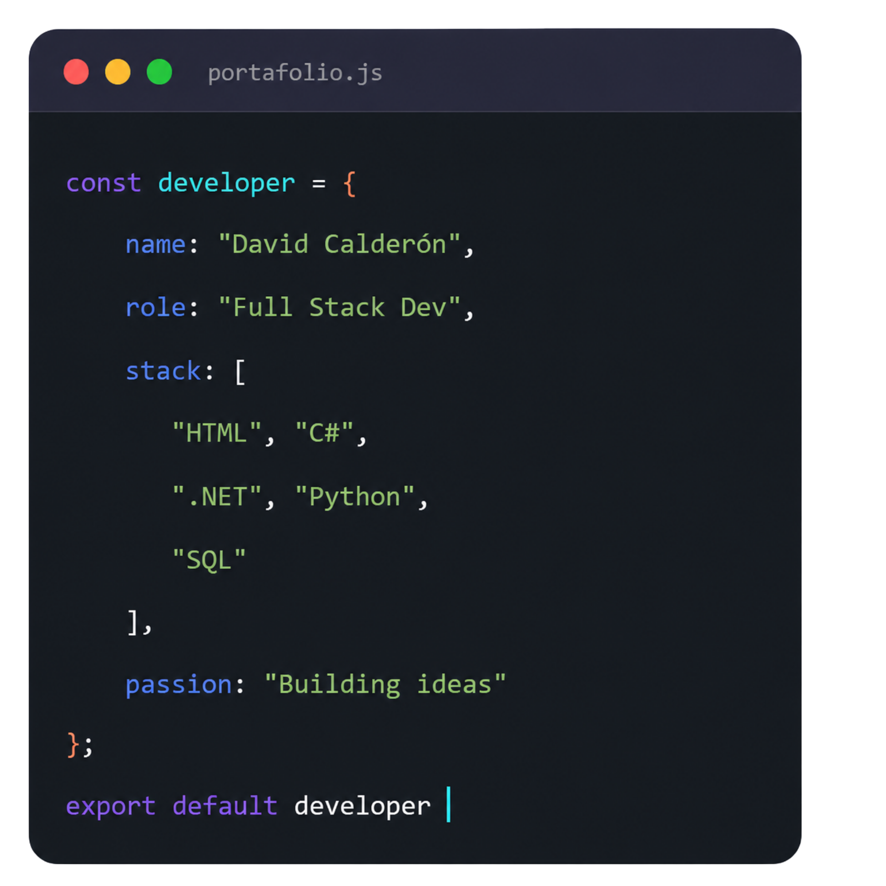
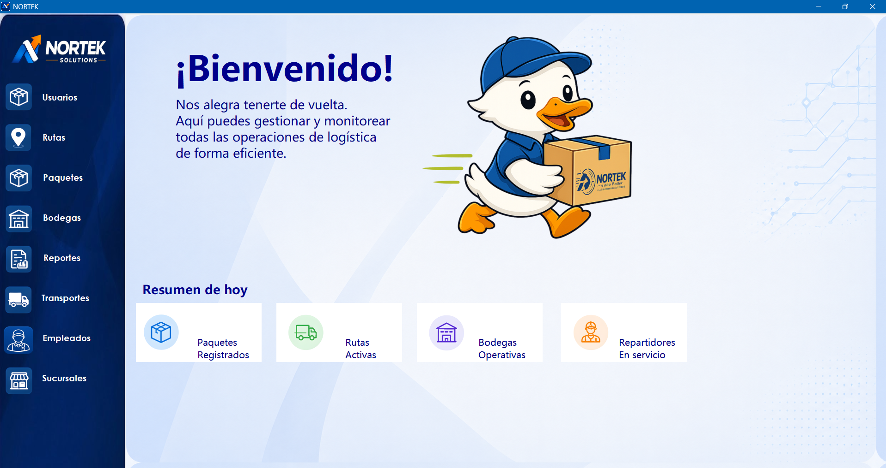
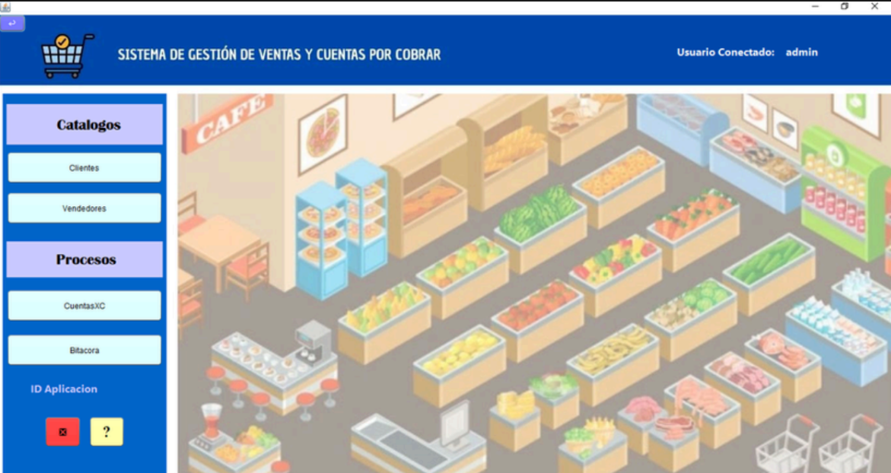
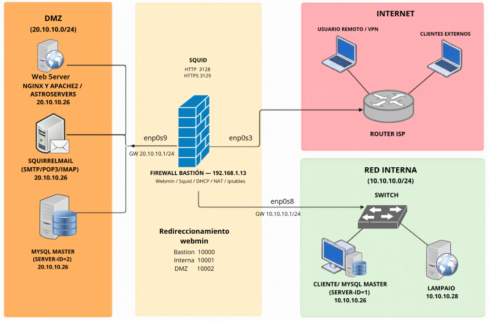
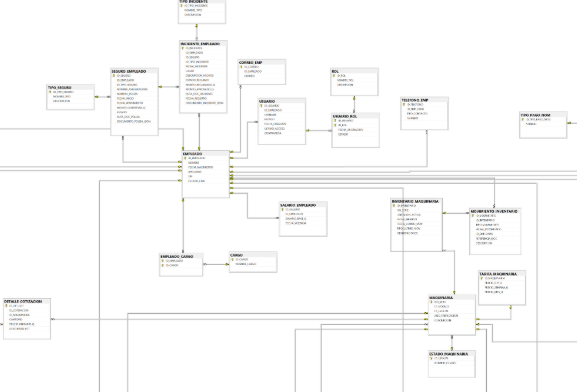
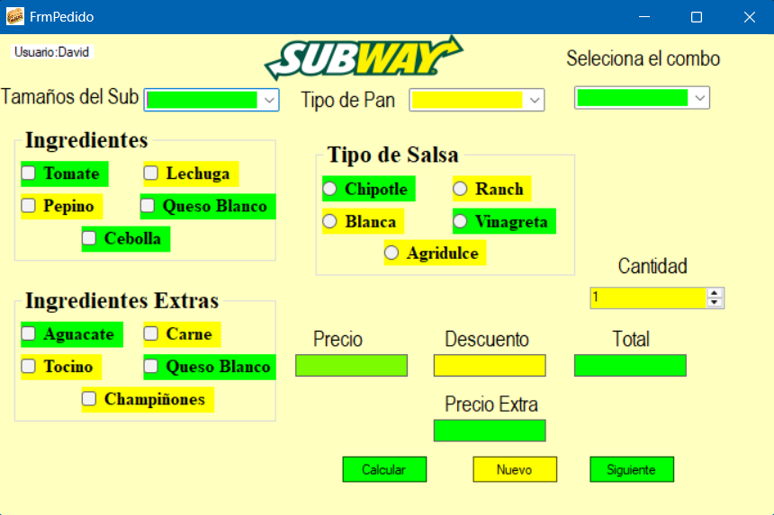

Disponible para proyectos
Hola, Soy
David Calderón
Apasionado por crear soluciones tecnológicas mediante desarrollo web, aplicaciones de escritorio, bases de datos. Disfruto transformar ideas en proyectos funcionales con interfaces modernas y experiencias intuitivas.
- HTML
- CSS
- JavaScript
- C#
- .NET
- SQL Server
- MySQL
- Git
- GitHub
- Python

Mi Trabajo
Proyectos reales que demuestran mis capacidades técnicas y creatividad en acción.

Sistema Reparto 🚚
Plataforma para gestión y optimización de rutas de reparto con seguimiento en tiempo real.
- .NET
- C#
- SQL SERVER
- Entity Framework
- Git

Sistema de Supermercado 🛒
Sistema de gestión de ventas y cuentas por cobrar para supermercado, con catálogos de clientes y vendedores, procesos de cobro y bitácora de actividad.
- Java
- NetBeans
- JDBC
- JasperReports
- MySQL
- Git

Manejo de Red Privada 🌐
Diseño e implementación de una red privada segmentada (DMZ, red interna e internet) con firewall bastión, NAT, DHCP y redireccionamiento de servicios vía Webmin y Squid.
- Ubuntu Server
- VirtualBox
- Firewall
- Squid
- iptables
- Nginx
- OpenVPN
- ISO 27001

Base de Datos - Sistema Empresarial 🗄️
Modelo entidad-relación para un sistema empresarial de gestión de empleados: nómina, seguros, roles, maquinaria e inventario de maquinaria..
- Modelo ER
- Base de Datos
- SQL SERVER

Sistema Subway 🥪
Aplicación de pedidos estilo Subway: selección de tamaño, pan, ingredientes, ingredientes extra, tipo de salsa y combo, con cálculo automático de precio y descuento.
- JavaScript
- Windows Forms